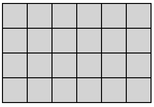
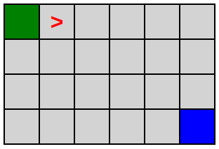

Exo decompOser
Tu te rappelles de cette présentation en saison 2 ?

On présentait l'intérêt de bien décomposer son code en plusieurs instructions simples afin d'arriver à ses fins, c'est à dire la case F3.
Désormais, dans cet exercice, tu vas devoir coder le programme qui va lire les instructions et ensuite déplacer l'élément rouge.
Autrement, tu vas coder un interpréteur d'un langage de programmation très simple, qui ne comprend que 3 instructions :
- turn left
- turn right
- move forward
Etapes
1 - Board :surfer: üèÇ
1.1 - Board simple
On va commencer par dessiner la grille, la board, le plateau.
- déclarer la méthode
drawBoard() dans app permettant de dessiner la board
- dans le code HTML, une div ayant l'id
board est destinée à contenir le code HTML du plateau/board
- partons sur un plateau de 4 lignes et de 6 colonnes
- dans la méthode
drawBoard() créer les div avec les bonnes classes pour avoir ces 4 lignes et 6 colonnes
- pour la partie esthétique, la feuille de style CSS te fournie tout ce dont tu as besoin

Code HTML du plateau

1.2 - Cases de départ et d'arrivée
- définir la première case en haut à gauche comme départ
- définir la dernière case en bas à droite comme arrivée
- dans la méthode
drawBoard() ajouter les classes CSS permettant de visualiser ces 2 cases

Code HTML du plateau

1.3 - Curseur / élément rouge
- définir la position initiale du curseur rouge comme étant la case de départ
- dans la méthode
drawBoard() ajouter les classes CSS permettant de visualiser ces 2 cases

Code HTML du plateau

2 - Commandes üéÆ
2.1 - Avancer
- créer une méthode
moveForward() permettant d'avancer le curseur
- pour avancer, il faut savoir dans quelle direction le curseur est orienté
- par défaut, le curseur est orienté vers la droite
- la position du curseur va être modifiée par la méthode
moveForward()
- pour tester, appeler cette méthode avant l'appel à la méthode
drawBoard()
- et vérifier que le curseur est bien avancé dans la bonne case
- si la position est correcte dans le code mais qu'on ne la visualise pas correctement, moifier la méthode
drawBoard() pour prendre en compte la position actuelle du curseur (cette position va changer dans le temps)

Code HTML du plateau

2.2 - Touner à droite
- créer une méthode
turnRight() permettant de changer la direction du curseur
- pour tourner, il faut savoir dans quelle direction le curseur est actuellement orienté
- la position du curseur n'est pas modifiée
- pour tester, appeler cette méthode avant l'appel à la méthode
drawBoard(), et après moveForward()
- et vérifier que le curseur a bien avancé dans la bonne case
- et que son orientation est bien vers le bas
- si l'orientation est correcte dans le code mais qu'on ne la visualise pas correctement, moifier la méthode
drawBoard() pour prendre en compte l'orientation actuelle du curseur (des classes CSS permettent de représenter l'orientation du curseur)
Code HTML du plateau

2.3 - Touner à gauche
- créer une méthode
turnLeft() permettant de changer la direction du curseur
- après avoir tourné à droite pour tester
turnRight()
- avancer
- puis tester la méthode
turnLeft()

Code HTML du plateau
2.4 - Tests
- effectues plusieurs tests pour vérifier que les méthodes créées ont le comportement souhaité
3 - Interpr√©ter le langage üíª
3.1 - Lancer l'interpréteur
- au click sur le bouton Launch script, tu dois dire à JS d'exécuter la méthode
handleLaunchScriptButton() fournie
- récupérer le contenu du textarea
- séparer chaque ligne du code => récupérer un "tableau de lignes"
- une m√©thode Javascript te permet de faire cela facilement, √† toi de trouver üòâ
- stocker le tableau de lignes dans une variable nommée
codeLines
- laisser le code suivant à la fin de cette méthode
- ce code permettra de boucler sur tout les lignes
Code à laisser tel quel
window.setTimeout(function() {
app.codeLineLoop(codeLines, 0);
}, 2000);
3.2 - Interpréter
- dans la méthode
codeLineLoop() fournie
- interpréter chaque ligne de code
- effectuer l'action selon le code
- laisser le code suivant à la fin de la méthode
codeLineLoop()
- car elle s'occupe de boucler sur les lignes puis, une fois les lignes parcourues, lancer la méthode gérant la victoire ou non
- et aussi, car ça permet d'afficher la board après chaque "mouvement"
Code à laisser tel quel
index++;
if (index < codeLines.length) {
window.setTimeout(function() {
app.codeLineLoop(codeLines, index);
}, 1000);
} else {
window.setTimeout(function() {
app.checkSuccess();
}, 1000);
}
3.3 - Erreurs
- dans la méthode
codeLineLoop()
- l'instruction notée dans le textarea peut ne pas être une des commandes du code
- dans ce cas, arrêter la "boucle" et afficher une erreur
4 - You win ! üéÜ
- une fois la "boucle" terminée
- la méthode fournie
checkSuccess() est appelée
- cette méthode va tester si le curseur est bien dans la case d'arrivée
- si oui => you win !
- si non => you loose …
5 - Faut pas déborder ✏️
- au moment d'avancer, il faut tester si on est pas sorti du cadre
- et si c'est le cas, afficher une erreur et arrêter le script
6 - Al√©atoire üîÄ
- rendre la case de départ aléatoire
- rendre la case d'arrivée aléatoire
Bonus üåà
Au choix, dans l'ordre voulu üòâ
- pouvoir relancer le script sans recharger la page
- autoriser des lignes vides dans le code
- autoriser des commentaires dans le code